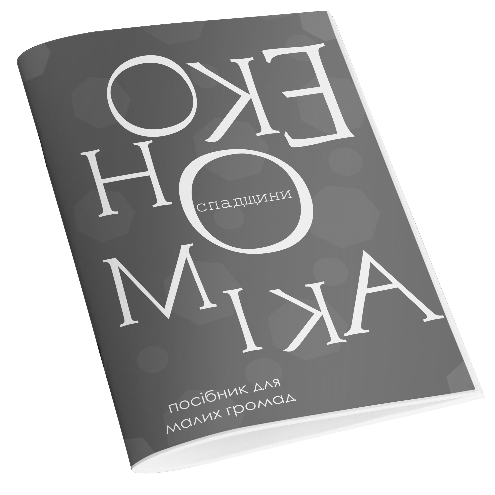
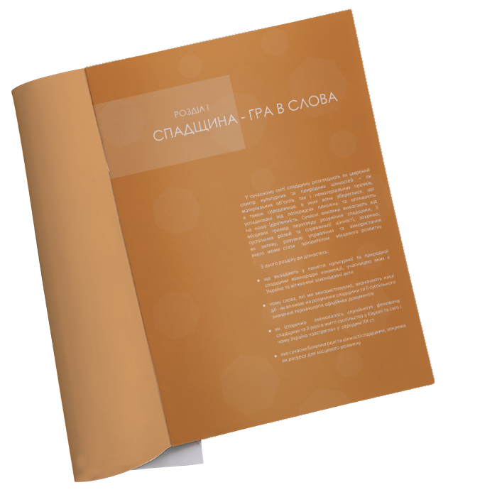
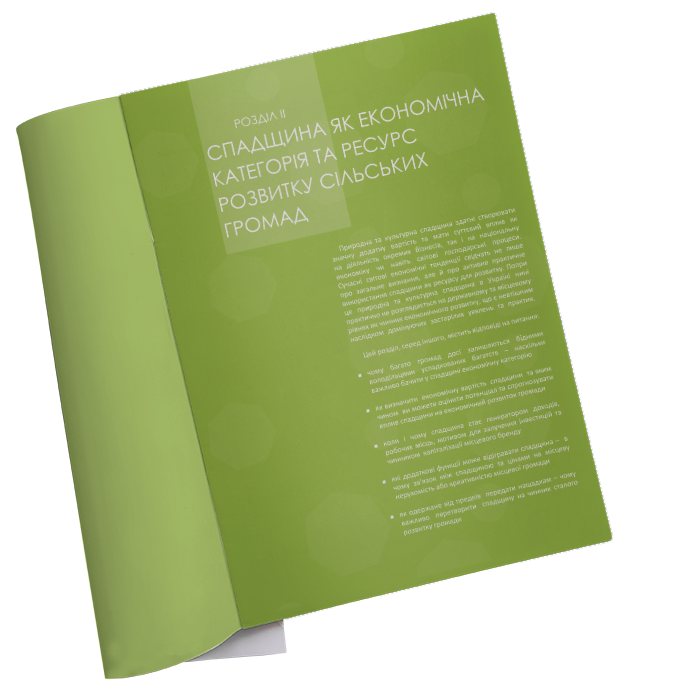
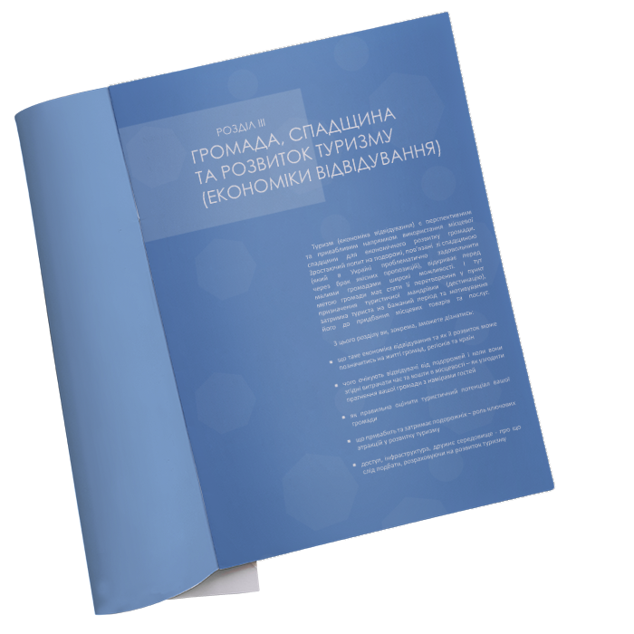
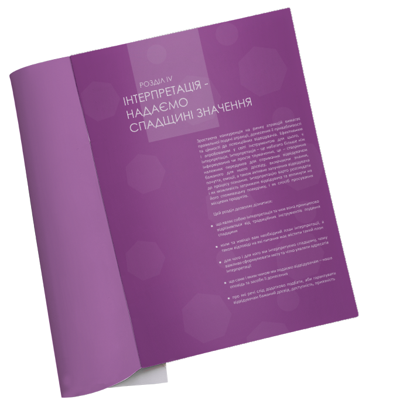

Говорячи про спадщину, люди зазвичай подумки спрямовуються у минуле. Старовинні споруди, артефакти, перекази й легенди традиційно занурюють нас у історію, а дивлячись на споконвічні дерева та озера, ми взагалі втрачаємо відчуття часу та віддаляємось від буденного. Культурна й природна спадщина – а така категорія означає всю сукупність успадкованих нами нерукотворних та створених попередниками цінностей – у традиційній уяві важко стикується з економічними категоріями та господарськими процесами.
У сучасному світі спадщину розглядають як широкий спектр культурних та природних цінностей – як матеріальних об’єктів, так і нематеріальних проявів, а також середовища, в яких вони збереглися, що успадковані від попередніх поколінь та впливають на нашу ідентичність. Сучасні виклики вимагають від місцевих громад перегляду розуміння спадщини, її суспільних ролей та справжньої цінності, зокрема, як активу, розумне управління та використання якого може стати пріоритетом місцевого розвитку.
Природна та культурна спадщина здатні створювати значну додатну вартість та мати суттєвий вплив як на діяльність окремих бізнесів, так і на національну економіку чи навіть світові господарські процеси. Сучасні світові економічні тенденції свідчать не лише про загальне визнання, але й про активне практичне використання спадщини як ресурсу для розвитку. Попри це природна та культурна спадщина в Україні нині практично не розглядається на державному та місцевому рівнях як чинник економічного розвитку, що є невтішним наслідком домінуючих застарілих уявлень та практик.
Туризм (економіка відвідування) є перспективним та привабливим напрямком використання місцевої спадщини для економічного розвитку громади. Зростаючий попит на подорожі, пов’язані зі спадщиною (який в Україні проблематично задовольнити через брак якісних пропозицій), відкриває перед малими громадами широкі можливості. І тут метою громади має стати її перетворення у пункт призначення туристичної мандрівки (дестинацію), затримка туриста на бажаний період та мотивування його до придбання місцевих товарів та послуг.
Зростаюча конкуренція на ринку атракцій вимагає правильної подачі атракції, донесення її привабливості та цінності до потенційних відвідувачів. Ефективним і апробованим у світі інструментом для цього, є інтерпретація. Інтерпретація – це набагато більше ніж інформування чи просте тлумачення, це – створення належних передумов для отримання відвідувачем бажаного для нього досвіду, включаючи знання, почуття, емоції, а також активне залучення відвідувача до процесу пізнання. Інтерпретацію варто розглядати і як можливість затримати відвідувача та вплинути на його споживацьку поведінку, і як спосіб просування місцевих продуктів.
